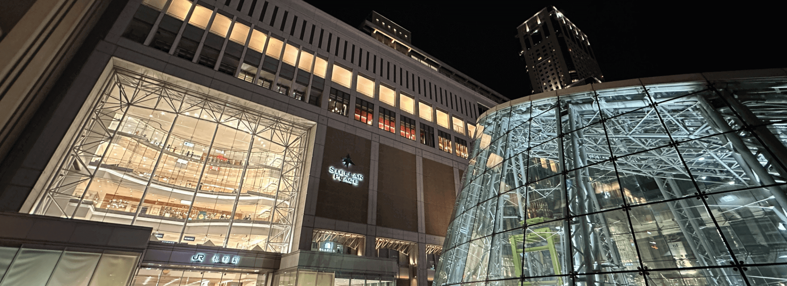
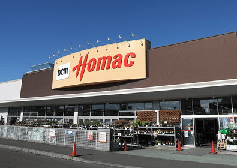
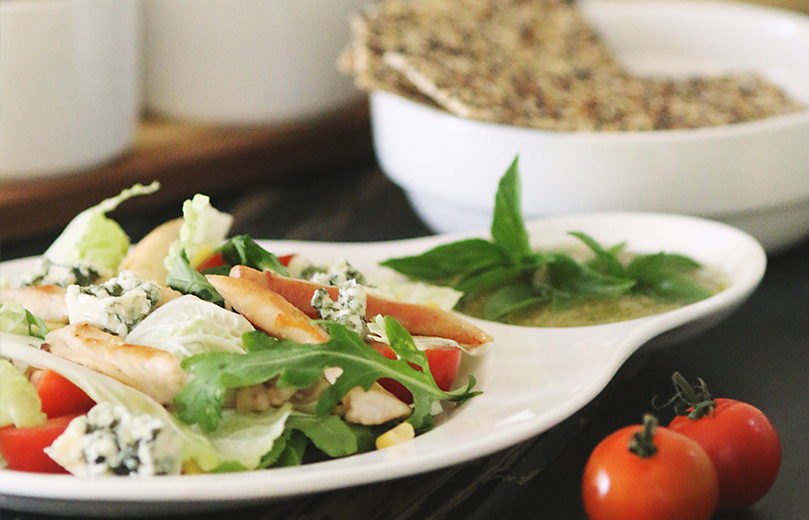
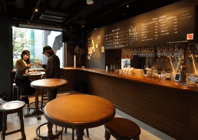
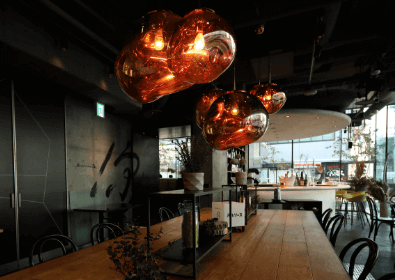
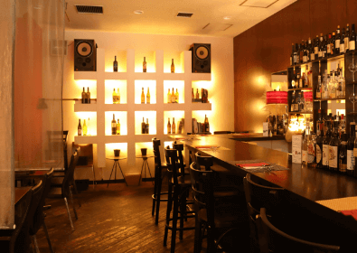
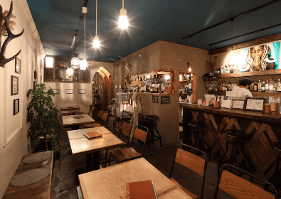
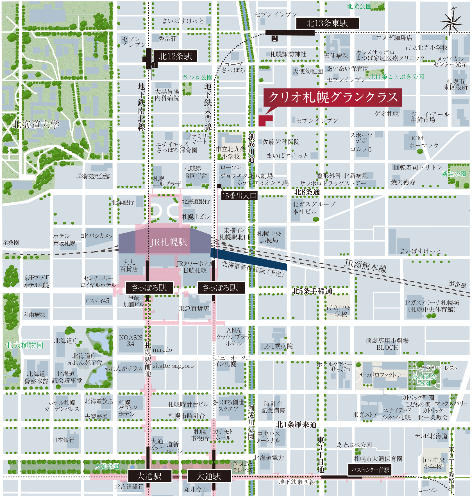

JR「札幌」駅（徒歩10分 約740m
LOCATION
SCROLL
ライフステージは、
再開発で期待高まる
「札幌」駅前エリア。

SHOPPING
札幌都心の華やぎを。
「札幌」駅を庭にする暮らし。
札幌ステラプレイスや大丸札幌店など、札幌駅の商業施設を自由自在に。
近い将来には、新たなビルが続々と誕生し、
さらに暮らしの利便が高まります。
駅前だけではない、
日常の買い物施設も充実。
現地東側エリアには、日常使いできる
スーパーマーケットやホームセンターなどが集積したショッピングゾーンが。
日々の暮らしを支える買い物施設の利便性も確保されています。
image photo
-
スポーツデポ 光星店（徒歩6分／約420m）
-
サツドラ北8条店（徒歩8分／約620m）
-
ジェイ・アール生鮮市場 北10条店
（徒歩8分／約600m） -

DCMホーマック 光星店（徒歩8分／約620m）
image photo
GOURMET
image photo
お気に入りが見つかる、
札幌都心で暮らす贅沢。
豊かな時を演出するレストランやカフェなどが周辺にあり、お気に入りの美しいグルメやスイーツと出会える幸福に満ちた生活環境です。

image photo
-

ヒニニツカ（徒歩8分／約630m）
-

Source72（徒歩7分／約560m）
-

オステリア エストエストエスト
（徒歩5分／約380m） -

CURRY KITCHEN onion
（徒歩10分／約780m）
EDUCATION
北海道大学のおひざ元、
札幌市内有数の文教エリア。
北海道大学をのぞむ札幌駅北エリアは札幌市内でも有数の文教エリア。
通学校の「北九条小学校」は、本物件の目の前、徒歩2分（約90m）です。
LIFE
INFORMATION

交通・公共施設
- 地下鉄南北線・東豊線「さっぽろ」駅
- （徒歩6分／約430m）
- 地下鉄東豊線「北13条東」駅
- （徒歩6分／約430m）
- 地下鉄南北線「北12条」駅
- （徒歩8分／約640m）
- JR「札幌」駅
- （徒歩10分／約740m）
商業施設
- セブンイレブン札幌北10条東店
- （徒歩2分／約150m）
- ファミリーマート 札幌北9条西2丁目店
- （徒歩4分／約300m）
- まいばすけっと北9条東2丁目店
- （徒歩5分／約370m）
- スポーツデポ 光星店
- （徒歩6分／約420m）
- ゴルフ5 光星店
- （徒歩6分／約480m）
- ジェイ・アール生鮮市場 北10条店
- （徒歩8分／約600m）
- ゲオ札幌光星店
- （徒歩8分／約600m）
- ツルハドラッグ 北10条店
- （徒歩8分／約600m）
- DCMホーマック 光星店
- （徒歩8分／約620m）
- サツドラ北8条店
- （徒歩8分／約620m）
- 札幌エスタ
- （徒歩10分／約780m）
- 札幌ステラプレイス
- （徒歩11分／約840m）
- 大丸札幌店
- （徒歩13分／約1,000m）
- ヨドバシカメラ マルチメディア札幌
- （徒歩13分／約1,010m）
- 紀伊國屋書店 札幌本店
- （徒歩15分／約1,130m）
医療施設
- かのん歯科
- （徒歩1分／約50m）
- 佐藤歯科医院
- （徒歩2分／約100m）
- 天使病院
- （徒歩7分／約500m）
- 太黒胃腸内科病院
- （徒歩7分／約500m）
- 整形外科北新病院
- （徒歩7分／約550m）
- 北海道大野病院附属駅前クリニック
- （徒歩7分／約550m）
- カレスサッポロ よつば家庭医療クリニック
- （徒歩15分／約1,130m）
- ファーマライズ医療モール（JRタワー内）
- （徒歩11分／約860m）
- JR札幌病院
- （徒歩11分／約870m）
- 光星メディカルクリニック
- （徒歩13分／1,030m）
- 北海道大学病院
- （徒歩15分／約1,150m）
教育施設
- 札幌市立北九条小学校
- （徒歩2分／約90m）
- 天使幼稚園
- （徒歩4分／約320m）
- ニチイキッズさっぽろ保育園
- （徒歩5分／約400m）
- あいあい保育園
- （徒歩6分／約460m）
- 北海道大学
- （徒歩9分／約720m）
- 子どもの園保育園
- （徒歩10分／約800m）
- 藤女子大学
- （徒歩11分／約820m）
- 藤女子中学校・高等学校
- （徒歩12分／約890m）
- 札幌市立北辰中学校
- （徒歩15分／約1,150m）
公園・緑地
- 創成川
- （徒歩1分／約40m）
- さつき公園
- （徒歩5分／約370m）
- 北11条ことぶき公園
- （徒歩8分／約600m）
- 北大イチョウ並木
- （徒歩10分／約750m）
- 光星緑地
- （徒歩13分／約1,040m）
- 新生公園
- （徒歩14分／約1,050m）
- 北大大野池
- （徒歩16分／約1,220m）
- 大通公園
- （徒歩18分／約1,400m）
- 北大平成ポプラ並木
- （徒歩30分／約2,370m）
公共・文化施設・金融機関
- 札幌第1合同庁舎
- （徒歩5分／約350m）
- 札幌中央郵便局
- （徒歩6分／約430m）
- 札幌エルプラザ
- （徒歩7分／約550m）
- 北海道銀行 札幌駅北口支店
- （徒歩8分／約570m）
- 北警察署札幌駅北口交番
- （徒歩9分／約670m）
- 北洋銀行 北七条支店
- （徒歩10分／約750m）
- 札幌シネマフロンティア
- （徒歩11分／約840m）
- 札幌市東区役所
- （徒歩12分／約890m）
- 札幌文化芸術劇場 (hitaru)
- （徒歩15分／約1,140m）
- 北海道大学総合博物館
- （徒歩15分／約1,180m）


※距離表示については地図上の概測距離を、徒歩分数表示については80mを1分として算出し、端数を切り上げて算出したものであり、信号待ち、一時停止等は含んでおりません。
※掲載の写真は2022年8月に撮影したものに一部CG処理したものです。
※掲載の現地周辺地図は、地図を基に描き起こしたもので実際とは異なります。
※記載の情報は2024年8月現在のものです。